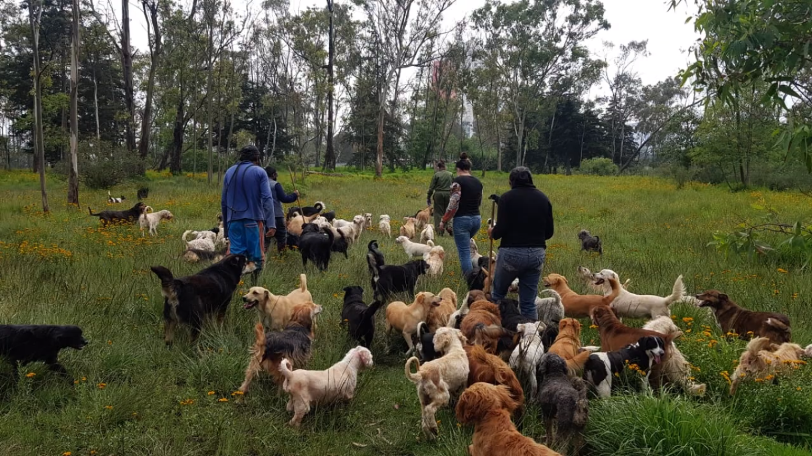
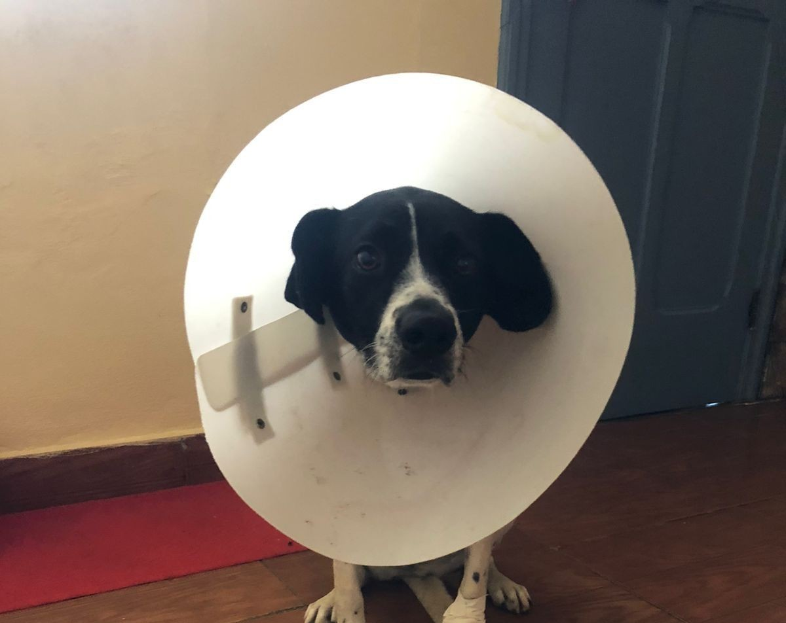
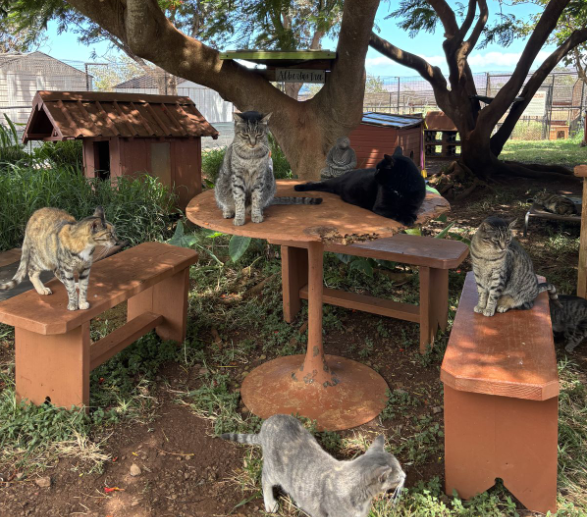

Somos la red de apoyo más efectiva y confiable para refugios y rescatistas.
Nuestra misión es actuar como canalizadores de recursos y apoyo para aquellos que cuidan animales de la calle. Facilitamos la entrega de suministros críticos — alimentos, medicinas e insumos — mejorando la calidad de vida de los animales rescatados.
Conoce másCuatro pilares que nos hacen diferentes
Tu dinero se convierte en alimento, vacunas y cuidado real para animales que lo necesitan.
Confirmamos la recepción de cada donación por correo electrónico y administramos los recursos con responsabilidad para maximizar su impacto.
Compramos por volumen con proveedores aliados, logrando que cada peso rinda más.
Dona en pocos pasos. Ingresa tus datos básicos y completa tu aporte de forma segura a través de PayPal.
Elige la forma en que quieres ayudar
Refugios y rescatistas que apoyamos directamente

Cuidan a más de 1,500 perritos y 40 gatitos con más de 50 años de trabajo.

Contamos con más de 25 canes en activo.

10 canes y 12 gatitos reciben ayuda cada mes.
Un proceso sencillo, seguro y transparente para transformar tu donación en ayuda real.
Completa tu nombre y correo electrónico para iniciar tu donación.
En PayPal podrás elegir el monto, la causa y si tu donación será única, semanal o mensual.
Finaliza tu donación de forma segura a través de PayPal en solo unos minutos.
Convertimos tu donación en alimento, medicinas e insumos que llegan directamente a refugios y rescatistas.